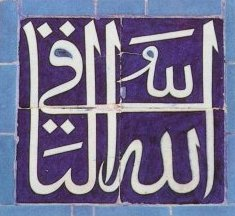

Sacred Texts
Islam

Islam
by John A. Williams
[1962, c. 1961, not renewed]
Title Page
Acknowledgments
Contents
The Opening
Chapter One: The Qur’ān: The Word of God
Introduction
1. God Speaks to Man
2. He Speaks Through the Prophets
3. He Reveals Himself
4. He Commands
5. He Rewards and Punishes
Chapter Two: The
Ḥadīth
: The News of God's Messenger
Introduction
1. Muhammad the Messenger
2. The Founding of the Community
3. Muhammad as Founder and Legislator
4. Muhammad as Model and Guide
5. The Preservation of the Prophetic Practice (Sunna)
Chapter Three: The Law: Fiqh, Sharī‘a
Introduction
1. ‘Ibādāt
2. The Regulation of Personal Status
3. The Ordinance of the Community
4. The Bidding Unto Good (Al-amr bi al-Ma‘ruf)
5. The Rejecting of the Reprehensible (Al-nāhī ‘an al-munkar)
6. The Universality of The Law
Chapter Four: Ṡūfism: The Interior Religion of the Community
Introduction
1. The Ascetics
2. The Ecstatics
3. The Antinomians
4. The Poets
5. The Dervishes
Chapter Five: Kalām: The Statements of the Theologians
Introduction
1. Abū Ḥanīfa
2. Al-Māturīdī
3. Al-Ash‘arī
4. Al-Juwaynī
5. Al-Ghazālī
6. Ibn Taymīya
Chapter Six: The Dissidents of the Community
Introduction
1. The Khārijīs
2. The Zaydīs
3. The Twelvers
4. The Seveners
References and Notes
Guide to Pronunciation of Terms
Index
Sacred Texts
|
Islam
« Previous: Errata
Index
Next: Islam: Title Page »